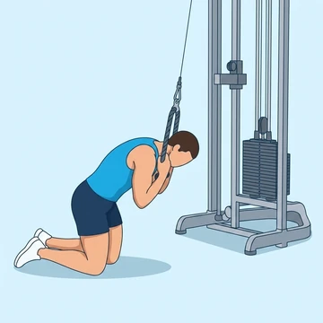

Cable Crunch
A kneeling abdominal exercise flexing the spine against cable resistance, allowing progressive loading of the rectus abdominis.
Core · Cable Machine · Intermediate


Muscles worked by the Cable Crunch
Primary
Secondary
Also called: abs, six-pack, rectus abdominis, abdominals, stomach muscles.
Equipment
Also called: cable pulley, functional trainer, cable crossover, cable column, cable station, pulley machine.
How to do the Cable Crunch
- Kneel in front of a cable machine with a rope attachment at the top.
- Hold the rope near your forehead with elbows bent.
- Crunch down by flexing your spine and bringing your elbows to your thighs.
- Squeeze your abs hard at the bottom.
- Return to the start position and repeat.
Form tips
- Avoid pulling the rope down with your arms.
- Keep your hips fixed so movement comes from the spine.
- Exhale fully as you crunch down.
At a glance
| Body part | Core |
|---|---|
| Category | Strength |
| Force type | Push |
| Mechanic | Isolation |
| Difficulty | Intermediate |
| Equipment | Cable Machine |
| Goals | Hypertrophy |
| Tags | Lower back safe, Knee safe, Shoulder safe, No axial load |
| MET | 5.0 (metabolic equivalent, for calorie estimates) |
| Unilateral | No |
| Bodyweight | No |
| Dataset id | cable-crunch |
Cable Crunch in German & Spanish
| German | Kabelzug Crunch |
|---|---|
| Spanish | Crunch con Cable |
Descriptions, instructions and tips ship in all three languages in the JSON.
Related exercises
Exercise data (JSON)
The record below is exactly what exercises.json ships for this exercise — names, descriptions, instructions and tips in English, German and Spanish.
{
"id": "cable-crunch",
"name_en": "Cable Crunch",
"name_de": "Kabelzug Crunch",
"name_es": "Crunch con Cable",
"description_en": "A kneeling abdominal exercise flexing the spine against cable resistance, allowing progressive loading of the rectus abdominis.",
"description_de": "Eine Bauchübung im Knien am Kabelzug, bei der der Oberkörper gegen den Widerstand des Seils eingerollt wird.",
"description_es": "Un encogimiento abdominal de rodillas en polea alta con cuerda, que permite añadir carga progresiva al trabajo del recto abdominal.",
"category": "strength",
"force_type": "push",
"mechanic": "isolation",
"difficulty": "intermediate",
"equipment": "cable",
"body_part": "core",
"primary_muscles": [
"rectus_abdominis"
],
"secondary_muscles": [
"obliques",
"transverse_abdominis"
],
"goals": [
"hypertrophy"
],
"tags": [
"lower_back_safe",
"knee_safe",
"shoulder_safe",
"no_axial_load"
],
"variation_group": "crunch",
"is_unilateral": false,
"is_bodyweight": false,
"instructions_en": [
"Kneel in front of a cable machine with a rope attachment at the top.",
"Hold the rope near your forehead with elbows bent.",
"Crunch down by flexing your spine and bringing your elbows to your thighs.",
"Squeeze your abs hard at the bottom.",
"Return to the start position and repeat."
],
"instructions_de": [
"Knie vor dem Kabelzuggerät mit einem Seilaufsatz oben.",
"Halte das Seil nahe der Stirn mit gebeugten Ellbogen.",
"Beuge die Wirbelsäule und führe die Ellbogen zu den Oberschenkeln.",
"Spanne die Bauchmuskeln unten stark an.",
"Zurück zur Ausgangsposition und wiederhole."
],
"instructions_es": [
"Arrodíllate frente a una máquina de cable con el accesorio de cuerda en la parte superior.",
"Sujeta la cuerda cerca de la frente con los codos flexionados.",
"Baja flexionando la columna y llevando los codos hacia los muslos.",
"Aprieta fuerte los abdominales en la parte inferior.",
"Vuelve a la posición inicial y repite."
],
"tips_en": [
"Avoid pulling the rope down with your arms.",
"Keep your hips fixed so movement comes from the spine.",
"Exhale fully as you crunch down."
],
"tips_de": [
"Runde den oberen Rücken bewusst ein, statt nur in der Hüfte abzuknicken.",
"Halte die Arme fixiert, statt mit ihnen zu ziehen.",
"Atme beim Einrollen vollständig aus, um die Spannung zu erhöhen."
],
"tips_es": [
"Flexiona la columna en lugar de tirar con los brazos.",
"Evita sentarte hacia atrás con la cadera en cada repetición.",
"Exhala con fuerza al bajar para contraer mejor el abdomen."
],
"met": 5.0,
"images": {
"flat": {
"start": "images/flat/cable-crunch-start.webp",
"peak": "images/flat/cable-crunch-peak.webp"
}
}
}Fetch just this exercise
const { exercises } = await fetch(
"https://exercise-dataset.com/exercises.json"
).then(r => r.json());
const ex = exercises.find(e => e.id === "cable-crunch");Free for personal and commercial in-app use with attribution (“Exercise data by RepDB”) — see the license and ready-made attribution snippets. Redistributing the data as a dataset or API is not permitted.